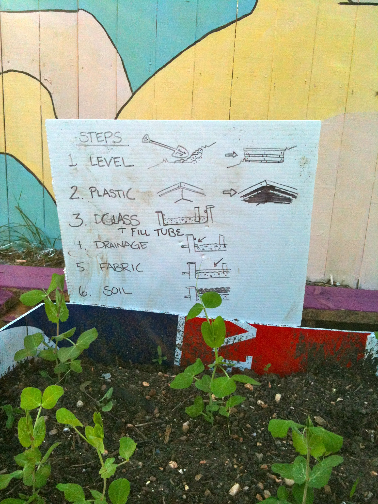

Food is Free - Austin, TX



Food is Free is a grass roots neighborhood gardening project started in Austin, Tx.
It is a Garden Cluster using Wicking Beds made from recycled waste materials. Started in Novemeber 2011 on Joe Sayers Avenue, the project quickly spread to include most of the houses on a city block. As of March, 2012, there are 15 wicking beds set up along the original block, and more cropping up on neighboring blocks...
Find out more at http://foodisfreeproject.org/